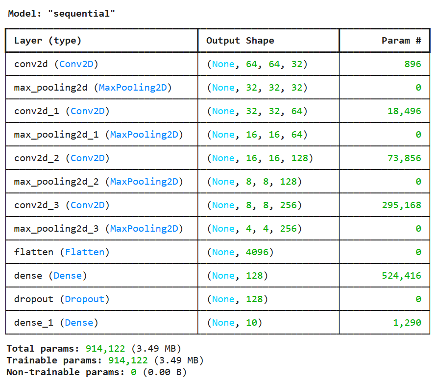
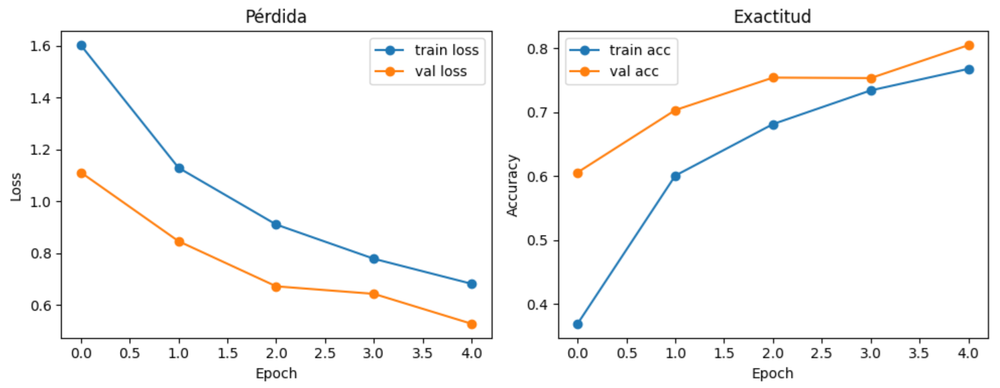
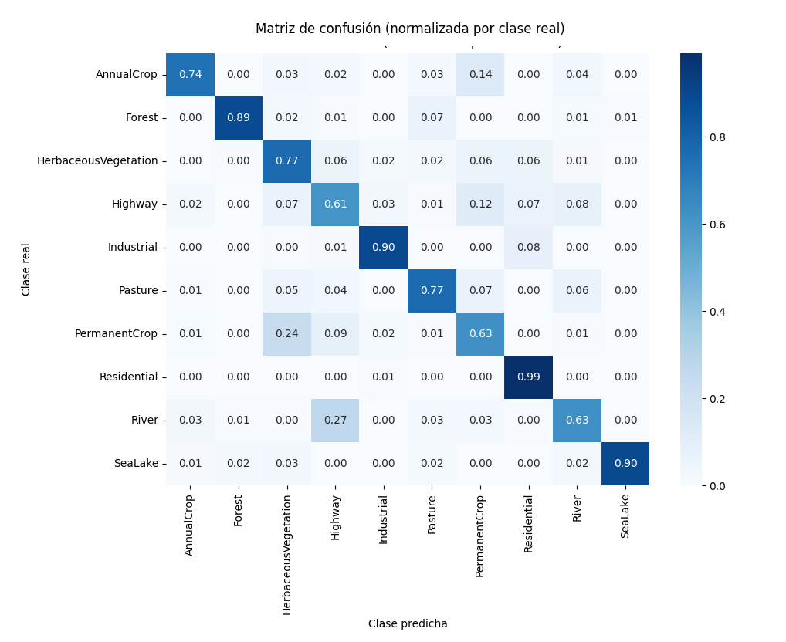

10. Capítulo: Ejemplos con Redes Neuronales Convolucionales (CNN)#
10.1. EuroSAT#
Este ejemplo está basado en un tutorial de The Python Code y muestra cómo entrenar una red neuronal convolucional utilizando imágenes satelitales del conjunto de datos EuroSAT [Helber et al., 2019], [Helber et al., 2018], el cual se encuentra disponible para su descarga en el repositorio abierto (Zenodo) [https://zenodo.org/records/7711810#.ZAm3k-zMKEA]. El dataset contiene escenas Sentinel-2 de 64×64 píxeles en tres bandas RGB, etiquetadas en distintas clases de cobertura del suelo, lo que permite su uso en tareas de clasificación supervisada.
El código que vemos en pantalla fue desarrollado y ejecutado en Google Colab, un entorno en la nube que nos permite trabajar con Python y deep learning sin necesidad de instalar nada localmente. En esta primera sección se cargan las librerías fundamentales del experimento. Por un lado, TensorFlow, que es el framework de deep learning que vamos a usar para construir y entrenar la red neuronal convolucional. Luego, tensorflow datasets, que nos facilita el acceso a conjuntos de datos estandarizados como EuroSAT. También se importa tensorflow hub, que permite reutilizar modelos y arquitecturas preentrenadas. Finalmente, se cargan librerías auxiliares como NumPy, Matplotlib y Seaborn, que se utilizan para el manejo de datos y la visualización de resultados. Esta preparación inicial define el entorno sobre el cual se va a construir toda la CNN.
10.1.1. Carga de Librerías#
“En este bloque se descarga y carga el dataset EuroSAT (versión RGB) usando tensorflow_datasets. Primero, la función tfds.load no solo trae las imágenes, sino también la información descriptiva del dataset (por ejemplo, sus clases y cantidad total de muestras). En la salida se observa el proceso de descarga, extracción y preparación, quedando almacenado localmente en Colab en la carpeta indicada…; por eso, en ejecuciones posteriores se reutiliza sin volver a descargar. El mensaje WARNING… es una advertencia interna de TFDS sobre un archivo de metadatos, pero no impide que el dataset se prepare correctamente, como confirma la línea ‘Dataset “EuroSAT” downloaded and prepared…’.”
# ==========================
# 1) Instalación de librerías
# ==========================
!pip install -q tensorflow tensorflow_datasets tensorflow_hub seaborn matplotlib
import os
import numpy as np
import matplotlib.pyplot as plt
import seaborn as sns
import tensorflow as tf
import tensorflow_datasets as tfds
import tensorflow_hub as hub
10.1.2. Carga de Eurosat y Partición#
Luego, el código define una partición simple del conjunto: 60% para entrenamiento, 20% para test y 20% para validación, todo a partir del split original llamado train. Finalmente, se imprimen los elementos centrales del problema de clasificación que va a resolver la CNN: las 10 clases (“AnnualCrop, Forest, HerbaceousVegetation, Highway, Industrial, Pasture, PermanentCrop, Residential, River, SeaLake”) y el total de 27.000 ejemplos. En otras palabras, a partir de aquí el modelo aprenderá a asignar a cada parche satelital RGB una de estas diez categorías de cobertura/uso del suelo.
from google.colab import drive
import os
# Montar Google Drive
drive.mount('/content/drive')
# Carpeta donde está eurosat.zip
MANUAL_DIR = "/content/drive/My Drive/EuroSAT"
# (Opcional) Verificar que el archivo está ahí
print(os.listdir(MANUAL_DIR))
# Configurar TFDS para usar el zip manual
download_config = tfds.download.DownloadConfig(
manual_dir=MANUAL_DIR
)
# Construir y preparar el dataset
builder = tfds.builder("eurosat")
builder.download_and_prepare(download_config=download_config)
info = builder.info
# splits
train_raw = builder.as_dataset(split="train[:60%]")
test_raw = builder.as_dataset(split="train[60%:80%]")
val_raw = builder.as_dataset(split="train[80%:]")
class_names = info.features["label"].names
num_classes = len(class_names)
num_examples = info.splits["train"].num_examples
print("Clases:", class_names)
print("Número de clases:", num_classes)
print("Total de ejemplos:", num_examples)
10.1.3. Función de preparación del dataset#
En este bloque el código prepara los datos para que puedan ser consumidos eficientemente por la red neuronal convolucional. La función “prepare for training” toma el dataset original y realiza una serie de transformaciones típicas en flujos de entrenamiento con CNN: primero normaliza las imágenes, y luego convierte las etiquetas de clase en vectores one-hot, que es el formato que espera el modelo para un problema de clasificación multiclase.
Además, el dataset se optimiza para el entrenamiento: se mezcla aleatoriamente para evitar sesgos, se agrupa en lotes (en inglés “batches”) de 64 imágenes, y se configura el “prefetch” para que la carga de datos no frene a la GPU. El resultado que vemos en pantalla confirma esto: cada lote contiene 64 parches de 64×64 píxeles con 3 canales (RGB) y, para cada imagen, un vector de 10 valores, uno por cada clase de “EuroSAT”. A partir de aquí, la CNN ya no trabaja con imágenes sueltas, sino con bloques de datos listos para aprender patrones espaciales.
def prepare_for_training(ds,
batch_size=64,
cache=True,
shuffle_buffer_size=1000):
# Opcionalmente cachea para que no reprocese en cada epoch
if cache:
ds = ds.cache()
# (imagen, etiqueta one-hot)
ds = ds.map(
lambda d: (
tf.cast(d["image"], tf.float32) / 255.0,
tf.one_hot(d["label"], num_classes)
),
num_parallel_calls=tf.data.AUTOTUNE
)
# Mezcla, repite, divide en batches y prefetch
ds = ds.shuffle(shuffle_buffer_size)
ds = ds.repeat()
ds = ds.batch(batch_size)
ds = ds.prefetch(tf.data.AUTOTUNE)
return ds
batch_size = 64
train_ds = prepare_for_training(train_raw, batch_size=batch_size)
val_ds = prepare_for_training(val_raw, batch_size=batch_size)
# Verificar shapes
for images, labels in train_ds.take(1):
print("Batch imágenes:", images.shape)
print("Batch etiquetas:", labels.shape)
El resultado del código anterior es:
Dataset eurosat downloaded and prepared to /root/tensorflow_datasets/eurosat/rgb/2.0.0. Subsequent calls will reuse this data.
Clases: [‘AnnualCrop’, ‘Forest’, ‘HerbaceousVegetation’, ‘Highway’, ‘Industrial’, ‘Pasture’, ‘PermanentCrop’, ‘Residential’, ‘River’, ‘SeaLake’]
Número de clases: 10
Total de ejemplos: 27000
“En este bloque definimos la arquitectura de la CNN que va a aprender a clasificar parches “EuroSAT” de 64×64 píxeles con 3 canales (RGB). El modelo está armado como una secuencia de ‘bloques’ repetidos: en cada bloque aparece una capa convolucional que aprende filtros (patrones) y a continuación un max pooling que reduce el tamaño espacial para concentrar la información más relevante y hacer el modelo más eficiente. A medida que avanzamos, el número de filtros crece de 32 → 64 → 128 → 256, lo cual significa que la red va construyendo representaciones cada vez más ricas: menos resolución espacial, pero más ‘profundidad’ semántica en forma de feature maps.” “Si miramos el “summary”, se ve esa compresión progresiva: empezamos en (64, 64, 32) y, tras el pooling, bajamos a (32, 32, 32); luego (16, 16, 64); después (8, 8, 128); y finalmente (4, 4, 256). En ese punto, Flatten convierte esos mapas en un vector de 4096 valores, que pasa por una capa densa de 128 neuronas (y “Dropout” para reducir sobreajuste). La última capa tiene 10 salidas con “softmax”, una por cada clase de “EuroSAT”, y devuelve una distribución de probabilidades: el modelo elige la clase con mayor probabilidad como predicción final.”
from tensorflow.keras import layers, models
# Las imágenes de EuroSAT son de 64x64x3
input_shape = (64, 64, 3)
model = models.Sequential([
layers.Input(shape=input_shape),
# Bloque 1
layers.Conv2D(32, (3, 3), activation='relu', padding='same'),
layers.MaxPooling2D((2, 2)),
# Bloque 2
layers.Conv2D(64, (3, 3), activation='relu', padding='same'),
layers.MaxPooling2D((2, 2)),
# Bloque 3
layers.Conv2D(128, (3, 3), activation='relu', padding='same'),
layers.MaxPooling2D((2, 2)),
# Bloque 4 (opcional para más capacidad)
layers.Conv2D(256, (3, 3), activation='relu', padding='same'),
layers.MaxPooling2D((2, 2)),
# Aplano y paso a densas
layers.Flatten(),
layers.Dense(128, activation='relu'),
layers.Dropout(0.5),
# Capa final de clasificación: num_classes viene del dataset (EuroSAT)
layers.Dense(num_classes, activation='softmax')
])
model.compile(
loss='categorical_crossentropy',
optimizer='adam',
metrics=['accuracy']
)
model.summary()
Los resultados son:
Batch imágenes: (64, 64, 64, 3)
Batch etiquetas: (64, 10)
10.1.4. Entrenar la CNN#
En este bloque pasamos del diseño del modelo al entrenamiento propiamente dicho. Primero definimos cuántos ejemplos tiene el dataset “EuroSAT” y cómo se reparten en entrenamiento y validación: 60 % para entrenar y 20 % para validar. Como los datasets de entrenamiento y validación están definidos con la función “repeat”, es necesario indicar explícitamente cuántos pasos por época debe ejecutar el modelo, que se calculan dividiendo la cantidad de ejemplos por el tamaño del batch.
Luego comienza el proceso de entrenamiento con “model dot fit”. En cada época, la red ve todos los parches de entrenamiento en batches de 64 imágenes, ajusta sus pesos y luego se evalúa sobre el conjunto de validación. La salida muestra cómo el modelo aprende progresivamente: la exactitud de entrenamiento sube de forma constante y la exactitud de validación pasa de alrededor del 57 % a más del 80 % en solo cinco épocas. Esto indica que la CNN está logrando capturar patrones espaciales relevantes en las imágenes satelitales y generaliza razonablemente bien a datos que no vio durante el entrenamiento.
# Tamaño del batch (el mismo que usaste para train_ds / val_ds)
batch_size = 64
# Número total de ejemplos en el split "train" de EuroSAT
num_examples = info.splits["train"].num_examples
# 60% train, 20% val, 20% test (como definimos antes)
train_size = int(num_examples * 0.6)
val_size = int(num_examples * 0.2)
# Como usamos .repeat() en train_ds y val_ds, definimos steps por epoch
n_train_steps = train_size // batch_size
n_val_steps = val_size // batch_size
print("Ejemplos train:", train_size, "→ steps/epoch:", n_train_steps)
print("Ejemplos val: ", val_size, "→ val_steps:", n_val_steps)
history = model.fit(
train_ds,
validation_data=val_ds,
steps_per_epoch=n_train_steps,
validation_steps=n_val_steps,
epochs=5, # podés subirlo después a 10–20
verbose=1
)
{kind=link}

Fig. 10.1 Entrenamiento: Model “Sequential”#
Los resultados son:
Ejemplos train: 16200 → steps/epoch: 253
Ejemplos val: 5400 → val_steps: 84
Epoch 1/5
253/253 ━━━━━━━━━━━━━━━━━━━━ 190s 743ms/step - accuracy: 0.2756 - loss: 1.8497 - val_accuracy: 0.6057 - val_loss: 1.1115
Epoch 2/5
253/253 ━━━━━━━━━━━━━━━━━━━━ 202s 799ms/step - accuracy: 0.5811 - loss: 1.1704 - val_accuracy: 0.7031 - val_loss: 0.8460
Epoch 3/5
253/253 ━━━━━━━━━━━━━━━━━━━━ 183s 724ms/step - accuracy: 0.6720 - loss: 0.9405 - val_accuracy: 0.7539 - val_loss: 0.6718
Epoch 4/5
253/253 ━━━━━━━━━━━━━━━━━━━━ 180s 712ms/step - accuracy: 0.7300 - loss: 0.7888 - val_accuracy: 0.7532 - val_loss: 0.6427
Epoch 5/5
253/253 ━━━━━━━━━━━━━━━━━━━━ 202s 798ms/step - accuracy: 0.7639 - loss: 0.6902 - val_accuracy: 0.8047 - val_loss: 0.5272
10.1.5. Curva de Pérdida y Exactitud#
“En este bloque analizamos cómo se comportó el entrenamiento de la red a lo largo del tiempo. A partir del objeto “history”, que guarda los resultados de cada época, se grafican dos curvas clave: la pérdida (“loss”) y la exactitud (“accuracy”), tanto para el conjunto de entrenamiento como para el de validación. Estas curvas nos permiten ver si la red realmente está aprendiendo y si ese aprendizaje se mantiene cuando se enfrenta a datos que no vio durante el entrenamiento.”
import matplotlib.pyplot as plt
plt.figure(figsize=(10, 4))
# Pérdida
plt.subplot(1, 2, 1)
plt.plot(history.history['loss'], marker='o', label='train loss')
plt.plot(history.history['val_loss'], marker='o', label='val loss')
plt.xlabel('Epoch')
plt.ylabel('Loss')
plt.legend()
plt.title('Pérdida')
# Exactitud
plt.subplot(1, 2, 2)
plt.plot(history.history['accuracy'], marker='o', label='train acc')
plt.plot(history.history['val_accuracy'], marker='o', label='val acc')
plt.xlabel('Epoch')
plt.ylabel('Accuracy')
plt.legend()
plt.title('Exactitud')
plt.tight_layout()
plt.show()
# ============================
# Imprimir valores numéricos
# ============================
print("\nResultados por época:\n")
num_epochs = len(history.history['loss'])
for epoch in range(num_epochs):
train_loss = history.history['loss'][epoch]
val_loss = history.history['val_loss'][epoch]
train_acc = history.history['accuracy'][epoch]
val_acc = history.history['val_accuracy'][epoch]
print(f"Época {epoch+1}: "
f"loss={train_loss:.4f}, val_loss={val_loss:.4f}, "
f"acc={train_acc:.4f}, val_acc={val_acc:.4f}")
“En el gráfico de pérdida observamos una tendencia descendente en “train” y “validation”, lo que indica que el modelo reduce progresivamente el error. En el gráfico de exactitud ocurre lo inverso: la “accuracy” aumenta con cada época, alcanzando en validación un valor cercano al 81 %. El listado numérico por época refuerza esta lectura y permite detectar señales importantes, como pequeñas oscilaciones en “validation loss”, que son normales y ayudan a evaluar si el modelo empieza a sobreajustarse o si todavía puede seguir entrenándose. En conjunto, estos resultados muestran un entrenamiento estable y consistente para una CNN aplicada a imágenes satelitales.”
Los gráficos obtenidos son:
{kind=link}

Fig. 10.2 Gráficos de Perdida (Loss) y Exactitud (Accuracy)#
Los Resultados por época:
Época 1: loss=1.6027, val_loss=1.1115, acc=0.3689, val_acc=0.6057
Época 2: loss=1.1294, val_loss=0.8460, acc=0.6006, val_acc=0.7031
Época 3: loss=0.9102, val_loss=0.6718, acc=0.6812, val_acc=0.7539
Época 4: loss=0.7781, val_loss=0.6427, acc=0.7339, val_acc=0.7532
Época 5: loss=0.6816, val_loss=0.5272, acc=0.7676, val_acc=0.8047
10.1.6. Evaluar el split de test#
“En este bloque el código prepara el conjunto de prueba (test) para evaluar el modelo entrenado. A diferencia del entrenamiento, acá no se aplican transformaciones como “repeat” o “shuffle”: las imágenes simplemente se normalizan y se agrupan en lotes. El objetivo es evaluar el modelo de forma ordenada y reproducible, usando datos que la red nunca vio durante el entrenamiento.”
“Luego, el script recorre todo el dataset de test y acumula las imágenes y sus etiquetas reales en arreglos “NumPy”. Esto permite pasar el conjunto completo al modelo de una sola vez para obtener las predicciones. Finalmente, la CNN devuelve para cada imagen un vector de probabilidades —una por clase— y se selecciona la clase con mayor probabilidad como predicción final. Este paso marca la transición desde el entrenamiento hacia la evaluación del desempeño real del modelo, comparando lo que predice la red con las etiquetas verdaderas del dataset.”
“En este caso, el conjunto de test está compuesto por 5.400 imágenes de 64×64 píxeles, cada una con su etiqueta original. El modelo procesa ese conjunto completo en lotes y genera las predicciones en unos pocos segundos, lo que muestra que, una vez entrenada, una CNN puede clasificar miles de parches satelitales de manera eficiente.”
import tensorflow as tf
import numpy as np
def prepare_for_eval(ds):
return ds.map(
lambda d: (
tf.cast(d["image"], tf.float32) / 255.0,
d["label"]
),
num_parallel_calls=tf.data.AUTOTUNE
).batch(64).prefetch(tf.data.AUTOTUNE)
test_ds = prepare_for_eval(test_raw)
# Acumulamos todas las imágenes y etiquetas del test
all_images = []
all_labels = []
for imgs, lbls in test_ds:
all_images.append(imgs.numpy())
all_labels.append(lbls.numpy())
all_images = np.concatenate(all_images, axis=0)
all_labels = np.concatenate(all_labels, axis=0)
print("all_images:", all_images.shape)
print("all_labels:", all_labels.shape)
# Predicciones del modelo
probs = model.predict(all_images, batch_size=64, verbose=1)
preds = np.argmax(probs, axis=1)
Los resultados de la ejecución de este chunk de código son:
all_images: (5400, 64, 64, 3)
all_labels: (5400,)
85/85 ━━━━━━━━━━━━━━━━━━━━ 20s 229ms/step
10.1.7. Métricas clásicas#
“En este bloque el código evalúa formalmente el desempeño del modelo sobre el conjunto de prueba usando dos métricas clave: “accuracy” y “F1 macro”. La “accuracy” indica el porcentaje total de parches correctamente clasificados, que en este caso ronda el 79,5 %, dando una medida general del rendimiento del modelo.”
“La métrica “F1 macro” complementa esa visión porque promedia el desempeño por clase, dándole el mismo peso a todas, incluso a las menos representadas. Un valor cercano a 0,78 indica que la CNN no solo acierta en promedio, sino que mantiene un comportamiento relativamente equilibrado entre los distintos tipos de cobertura del suelo. En problemas geoespaciales, esta métrica es especialmente importante porque evita que el modelo ‘parezca bueno’ solo por acertar las clases dominantes.”
from sklearn.metrics import accuracy_score, f1_score
acc = accuracy_score(all_labels, preds)
f1_macro = f1_score(all_labels, preds, average='macro')
print("Accuracy en test:", acc)
print("F1 macro en test:", f1_macro)
Los resultados obtenidos se transcriben aca:
Accuracy en test: 0.789074074074074
F1 macro en test: 0.7843040463560427
10.1.8. Matriz de Confusión#
“En este último bloque se construye la matriz de confusión, que permite entender cómo se equivoca el modelo, no solo cuánto acierta. Cada fila representa la clase real del parche y cada columna la clase que el modelo predijo. Al normalizar por filas, cada fila suma 1, lo que facilita ver, para cada tipo de cobertura, qué proporción fue correctamente clasificada y hacia qué otras clases se confunde.”
from sklearn.metrics import confusion_matrix
import seaborn as sns
import matplotlib.pyplot as plt
cm = confusion_matrix(all_labels, preds)
# Normalizamos por filas (clase real)
cm_norm = cm.astype('float') / cm.sum(axis=1, keepdims=True)
plt.figure(figsize=(10, 8))
sns.heatmap(
cm_norm,
annot=True,
fmt=".2f",
cmap="Blues",
xticklabels=class_names,
yticklabels=class_names
)
plt.ylabel("Clase real")
plt.xlabel("Clase predicha")
plt.title("Matriz de confusión (normalizada por clase real)")
plt.tight_layout()
plt.show()
“El mapa de calor hace visible la estructura de los errores: una diagonal intensa indica buen desempeño, mientras que valores fuera de la diagonal revelan confusiones sistemáticas, por ejemplo entre zonas urbanas similares o entre cultivos y pasturas. En aplicaciones geoespaciales, esta matriz es clave porque permite evaluar si los errores del modelo son aceptables desde el punto de vista territorial o si afectan clases críticas para el análisis.” Este resultado muestra que el modelo funciona bien en clases visualmente consistentes y extensas, como “Forest”, “Residential” y “SeaLake”, donde la diagonal es alta (≈0.9 o más). Eso indica que la CNN aprendió patrones espaciales claros y repetibles en parches de 64×64, algo típico en cubiertas homogéneas. En particular, “Residential” y “SeaLake” están casi perfectamente clasificadas, lo cual es un muy buen indicador de separación semántica. Las mayores confusiones aparecen en clases más heterogéneas o mixtas, como “Highway”, “PermanentCrop” y “HerbaceousVegetation”. Por ejemplo, “Highway” se confunde con “Residential” y “River”, lo cual es razonable desde lo visual (infraestructura lineal, bordes, materiales similares). “PermanentCrop” se mezcla con “AnnualCrop” y “HerbaceousVegetation”, algo esperado porque esas coberturas comparten textura y color a la escala del parche. En conjunto, la matriz confirma que el modelo es sólido para un demo educativo y que las limitaciones vienen más por la escala del parche y la ambigüedad semántica que por fallas del entrenamiento.
{kind=link}

Fig. 10.3 Matriz de confusión (normalizada por clase)#
10.1.9. La importancia de los datasets de entrenamiento#
Para finalizar este ejemplo basado en EuroSAT, resulta esencial destacar la importancia de contar con conjuntos de datos satelitales etiquetados, curados y de alcance regional, ya que su construcción sistemática garantiza coherencia entre las imágenes, las clases y el territorio representado, permitiendo entrenar y evaluar modelos de aprendizaje profundo con mayor validez y capacidad de generalización en tareas de clasificación de cobertura y uso del suelo. En el contexto europeo, además de EuroSAT —desarrollado a partir de imágenes Sentinel-2— se dispone de BigEarthNet, un conjunto de datos curado con anotaciones multietiqueta de cobertura del suelo a escala continental. De manera complementaria, en América del Sur existen datasets regionales curados como LandCoverNet South America, que proporciona chips satelitales etiquetados de cobertura del suelo distribuidos a lo largo del continente, así como el Sentinel-1/2 Multisensor Dataset for Brazil, orientado al territorio brasileño, y Brazilian Coffee Scenes, enfocado en la identificación de cultivos de café a partir de imágenes satelitales.